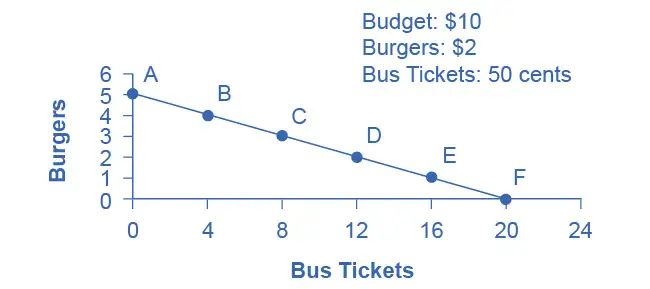
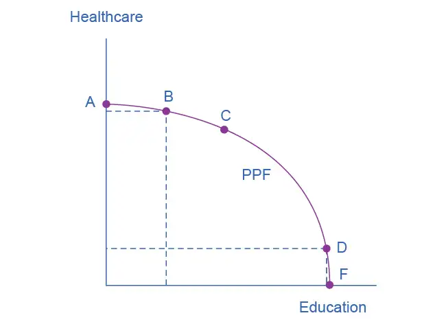
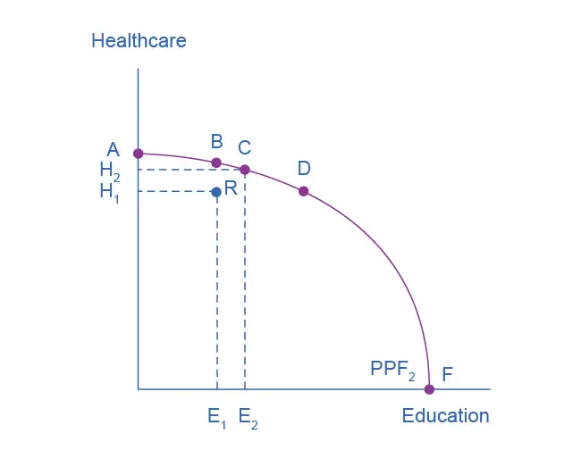
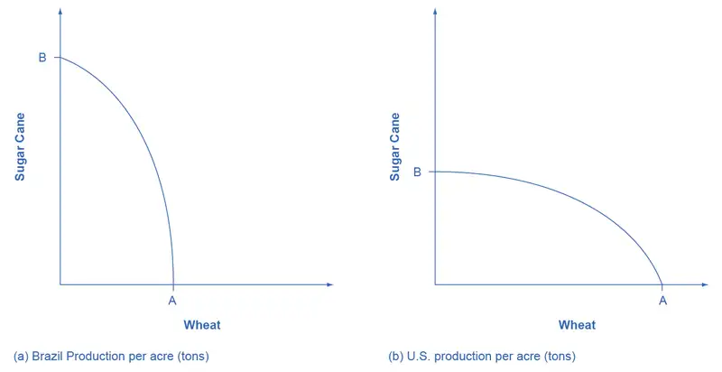
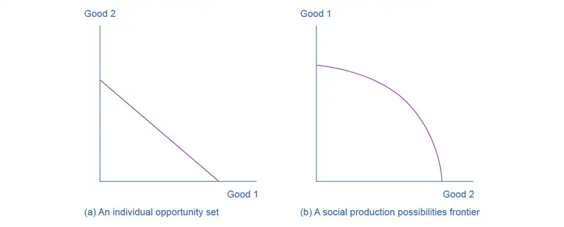
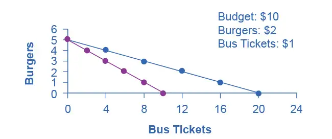

Chapter 2: Choice in a World of Scarcity¶
Introduction¶
Bring It Home: Choices ... to What Degree?
Does your level of education impact earning? Let’s look at some data from the Bureau of Labor Statistics (BLS). In 2020, among full-time wage and salary workers, median weekly earnings for those with a master’s degree were $1,545. Multiply this average by 52 weeks, and you get average annual earnings of $80,340. Compare that to the median weekly earnings for full-time workers aged 25 and over with just a bachelor’s degree: $1,305 weekly and $67,860 a year. What about those with no higher than a high school diploma in 2020? They earn an average of just $781 weekly and $40,612 over 12 months. In other words, data from the BLS indicates that receiving a bachelor’s degree boosts earnings by 67% over what workers would have earned if they only obtained a high school diploma, and a master’s degree yields average earnings that are nearly double those of workers with a high school diploma.
Given these statistics, we might expect many people to choose to go to college and at least earn a bachelor’s degree. Assuming that people want to improve their material well-being, it seems like they would make those choices that provide them with the greatest opportunity to consume goods and services. As it turns out, the analysis is not nearly as simple as this. In fact, in 2019, the BLS reported that while just over 90% of the population aged 25 and over in the United States had a high school diploma, only 36% of those aged 25 and over had a bachelor's or higher degree, and only 13.5% had earned a master's or higher degree.
This brings us to the subject of this chapter: why people make the choices they make and how economists explain those choices.
Chapter Outline: Introduction to Choice in a World of Scarcity
In this chapter, you will learn about:
- How Individuals Make Choices Based on Their Budget Constraint
- The Production Possibilities Frontier and Social Choices
- Confronting Objections to the Economic Approach
You will learn quickly when you examine the relationship between economics and scarcity that choices involve tradeoffs. Every choice has a cost.
In 1968, the Rolling Stones recorded “You Can’t Always Get What You Want.” Economists chuckled, because they had been singing a similar tune for decades. English economist Lionel Robbins (1898–1984), in his Essay on the Nature and Significance of Economic Science in 1932, described not always getting what you want in this way:
The time at our disposal is limited. There are only twenty-four hours in the day. We have to choose between the different uses to which they may be put. ... Everywhere we turn, if we choose one thing we must relinquish others which, in different circumstances, we would wish not to have relinquished. Scarcity of means to satisfy given ends is an almost ubiquitous condition of human nature.
Because people live in a world of scarcity, they cannot have all the time, money, possessions, and experiences they wish. Neither can society.
This chapter will continue our discussion of scarcity and the economic way of thinking by first introducing three critical concepts: opportunity cost, marginal decision making, and diminishing returns. Later, it will consider whether the economic way of thinking accurately describes either how we make choices and how we should make them.
2.1 How Individuals Make Choices Based on Their Budget Constraint¶
Learning Objectives
By the end of this section, you will be able to:
- Calculate and graph budget constraints
- Explain opportunity sets and opportunity costs
- Evaluate the law of diminishing marginal utility
- Explain how marginal analysis and utility influence choices
Consider the typical consumer’s budget problem. Consumers have a limited amount of income to spend on the things they need and want. Suppose Alphonso has $10 in spending money each week that he can allocate between bus tickets for getting to work and the burgers that he eats for lunch. Burgers cost $2 each, and bus tickets are 50 cents each. We can see Alphonso's budget problem in Figure 2.2.

The vertical axis in the figure shows burger purchases and the horizontal axis shows bus ticket purchases. If Alphonso spends all his money on burgers, he can afford five per week. ($10 per week/$2 per burger = 5 burgers per week.) However, if he does this, he will not be able to afford any bus tickets. Point A in the figure shows the choice (zero bus tickets and five burgers). Alternatively, if Alphonso spends all his money on bus tickets, he can afford 20 per week. ($10 per week/$0.50 per bus ticket = 20 bus tickets per week.) Then, however, he will not be able to afford any burgers. Point F shows this alternative choice (20 bus tickets and zero burgers).
If we connect all the points between A and F, we get Alphonso's budget constraint. This indicates all the combination of burgers and bus tickets Alphonso can afford, given the price of the two goods and his budget amount.
If Alphonso is like most people, he will choose some combination that includes both bus tickets and burgers. That is, he will choose some combination on the budget constraint that is between points A and F. Every point on (or inside) the constraint shows a combination of burgers and bus tickets that Alphonso can afford. Any point outside the constraint is not affordable, because it would cost more money than Alphonso has in his budget.
The budget constraint clearly shows the tradeoff Alphonso faces in choosing between burgers and bus tickets. Suppose he is currently at point D, where he can afford 12 bus tickets and two burgers. What would it cost Alphonso for one more burger? It would be natural to answer $2, but that’s not the way economists think. Instead they ask, how many bus tickets would Alphonso have to give up to get one more burger, while staying within his budget? Since bus tickets cost 50 cents, Alphonso would have to give up four to afford one more burger. That is the true cost to Alphonso.
The Concept of Opportunity Cost¶
Economists use the term opportunity cost to indicate what people must give up to obtain what they desire. The idea behind opportunity cost is that the cost of one item is the lost opportunity to do or consume something else. In short, opportunity cost is the value of the next best alternative. For Alphonso, the opportunity cost of a burger is the four bus tickets he would have to give up. He would decide whether or not to choose the burger depending on whether the value of the burger exceeds the value of the forgone alternative—in this case, bus tickets. Since people must choose, they inevitably face tradeoffs in which they have to give up things they desire to obtain other things they desire more.
Link It Up
View this website for an example of opportunity cost—paying someone else to wait in line for you.
A fundamental principle of economics is that every choice has an opportunity cost. If you sleep through your economics class, the opportunity cost is the learning you miss from not attending class. If you spend your income on video games, you cannot spend it on movies. If you choose to marry one person, you give up the opportunity to marry anyone else. In short, opportunity cost is all around us and part of human existence.
The following Work It Out feature shows a step-by-step analysis of a budget constraint calculation. Read through it to understand another important concept—slope—that we further explain in the appendix The Use of Mathematics in Principles of Economics.
Work It Out: Understanding Budget Constraints
Budget constraints are easy to understand if you apply a little math. The appendix The Use of Mathematics in Principles of Economics explains all the math you are likely to need in this book. Therefore, if math is not your strength, you might want to take a look at the appendix.
Step 1: The equation for any budget constraint is:
where P and Q are the price and quantity of items purchased (which we assume here to be two items) and Budget is the amount of income one has to spend.
Step 2. Apply the budget constraint equation to the scenario. In Alphonso’s case, this works out to be:
Step 3. Using a little algebra, we can turn this into the familiar equation of a line:
For Alphonso, this is:
Step 4. Simplify the equation. Begin by multiplying both sides of the equation by 2:
Step 5. Subtract one bus ticket from both sides:
Divide each side by 4 to yield the answer:
Step 6. Notice that this equation fits the budget constraint in Figure 2.2. The vertical intercept is 5 and the slope is –0.25, just as the equation says. If you plug 20 bus tickets into the equation, you get 0 burgers. If you plug other numbers of bus tickets into the equation, you get the results (see Table 2.1), which are the points on Alphonso’s budget constraint.
Table 2.1
| Point | Quantity of Burgers (at $2) | Quantity of Bus Tickets (at 50 cents) |
|---|---|---|
| A | 5 | 0 |
| B | 4 | 4 |
| C | 3 | 8 |
| D | 2 | 12 |
| E | 1 | 16 |
| F | 0 | 20 |
Step 7. Notice that the slope of a budget constraint always shows the opportunity cost of the good which is on the horizontal axis. For Alphonso, the slope is −0.25, indicating that for every bus ticket he buys, he must give up 1/4 burger. To phrase it differently, for every four tickets he buys, Alphonso must give up 1 burger.
There are two important observations here. First, the algebraic sign of the slope is negative, which means that the only way to get more of one good is to give up some of the other. Second, we define the slope as the price of bus tickets (whatever is on the horizontal axis in the graph) divided by the price of burgers (whatever is on the vertical axis), in this case $0.50/$2 = 0.25. If you want to determine the opportunity cost quickly, just divide the two prices.
Identifying Opportunity Cost¶
In many cases, it is reasonable to refer to the opportunity cost as the price. If your cousin buys a new bicycle for $300, then $300 measures the amount of “other consumption” that he has forsaken. For practical purposes, there may be no special need to identify the specific alternative product or products that he could have bought with that $300, but sometimes the price as measured in dollars may not accurately capture the true opportunity cost. This problem can loom especially large when costs of time are involved.
For example, consider a boss who decides that all employees will attend a two-day retreat to “build team spirit.” The out-of-pocket monetary cost of the event may involve hiring an outside consulting firm to run the retreat, as well as room and board for all participants. However, an opportunity cost exists as well: during the two days of the retreat, none of the employees are doing any other work.
Attending college is another case where the opportunity cost exceeds the monetary cost. The out-of-pocket costs of attending college include tuition, books, room and board, and other expenses. However, in addition, during the hours that you are attending class and studying, it is impossible to work at a paying job. Thus, college imposes both an out-of-pocket cost and an opportunity cost of lost earnings.
Clear It Up: What is the opportunity cost associated with increased airport security measures?
After the terrorist plane hijackings on September 11, 2001, many steps were proposed to improve air travel safety. For example, the federal government could provide armed “sky marshals” who would travel inconspicuously with the rest of the passengers. The cost of having a sky marshal on every flight would be roughly $3 billion per year. Retrofitting all U.S. planes with reinforced cockpit doors to make it harder for terrorists to take over the plane would have a price tag of $450 million. Buying more sophisticated security equipment for airports, like three-dimensional baggage scanners and cameras linked to face recognition software, could cost another $2 billion.
However, the single biggest cost of greater airline security does not involve spending money. It is the opportunity cost of additional waiting time at the airport. According to the United States Department of Transportation (DOT), there were 895.5 million systemwide (domestic and international) scheduled service passengers in 2015. Since the 9/11 hijackings, security screening has become more intensive, and consequently, the procedure takes longer than in the past. Say that, on average, each air passenger spends an extra 30 minutes in the airport per trip. Economists commonly place a value on time to convert an opportunity cost in time into a monetary figure. Because many air travelers are relatively high-paid business people, conservative estimates set the average price of time for air travelers at $20 per hour. By these back-of-the-envelope calculations, the opportunity cost of delays in airports could be as much as 800 million × 0.5 hours × $20/hour, or $8 billion per year. Clearly, the opportunity costs of waiting time can be just as important as costs that involve direct spending.
In some cases, realizing the opportunity cost can alter behavior. Imagine, for example, that you spend $8 on lunch every day at work. You may know perfectly well that bringing a lunch from home would cost only $3 a day, so the opportunity cost of buying lunch at the restaurant is $5 each day (that is, the $8 buying lunch costs minus the $3 your lunch from home would cost). Five dollars each day does not seem to be that much. However, if you project what that adds up to in a year—250 days a year × $5 per day equals $1,250, the cost, perhaps, of a decent vacation. If you describe the opportunity cost as “a nice vacation” instead of “$5 a day,” you might make different choices.
Marginal Decision-Making and Diminishing Marginal Utility¶
The budget constraint framework helps to emphasize that most choices in the real world are not about getting all of one thing or all of another; that is, they are not about choosing either the point at one end of the budget constraint or else the point all the way at the other end. Instead, most choices involve marginal analysis, which means examining the benefits and costs of choosing a little more or a little less of a good. People naturally compare costs and benefits, but often we look at total costs and total benefits, when the optimal choice necessitates comparing how costs and benefits change from one option to another. You might think of marginal analysis as “change analysis.” Marginal analysis is used throughout economics.
We now turn to the notion of utility. People desire goods and services for the satisfaction or utility those goods and services provide. Utility, as we will see in the chapter on Consumer Choices, is subjective but that does not make it less real. Economists typically assume that the more of some good one consumes (for example, slices of pizza), the more utility one obtains. At the same time, the utility a person receives from consuming the first unit of a good is typically more than the utility received from consuming the fifth or the tenth unit of that same good. When Alphonso chooses between burgers and bus tickets, for example, the first few bus rides that he chooses might provide him with a great deal of utility—perhaps they help him get to a job interview or a doctor’s appointment. However, later bus rides might provide much less utility—they may only serve to kill time on a rainy day. Similarly, the first burger that Alphonso chooses to buy may be on a day when he missed breakfast and is ravenously hungry. However, if Alphonso has multiple burgers every day, the last few burgers may taste pretty boring. The general pattern that consumption of the first few units of any good tends to bring a higher level of utility to a person than consumption of later units is a common pattern. Economists refer to this pattern as the law of diminishing marginal utility, which means that as a person receives more of a good, the additional (or marginal) utility from each additional unit of the good declines. In other words, the first slice of pizza brings more satisfaction than the sixth.
The law of diminishing marginal utility explains why people and societies rarely make all-or-nothing choices. You would not say, “My favorite food is ice cream, so I will eat nothing but ice cream from now on.” Instead, even if you get a very high level of utility from your favorite food, if you ate it exclusively, the additional or marginal utility from those last few servings would not be very high. Similarly, most workers do not say: “I enjoy leisure, so I’ll never work.” Instead, workers recognize that even though some leisure is very nice, a combination of all leisure and no income is not so attractive. The budget constraint framework suggests that when people make choices in a world of scarcity, they will use marginal analysis and think about whether they would prefer a little more or a little less.
A rational consumer would only purchase additional units of some product as long as the marginal utility exceeds the opportunity cost. Suppose Alphonso moves down his budget constraint from Point A to Point B to Point C and further. As he consumes more bus tickets, the marginal utility of bus tickets will diminish, while the opportunity cost, that is, the marginal utility of foregone burgers, will increase. Eventually, the opportunity cost will exceed the marginal utility of an additional bus ticket. If Alphonso is rational, he won’t purchase more bus tickets once the marginal utility just equals the opportunity cost. While we can’t (yet) say exactly how many bus tickets Alphonso will buy, that number is unlikely to be the most he can afford, 20.
Sunk Costs¶
In the budget constraint framework, all decisions involve what will happen next: that is, what quantities of goods will you consume, how many hours will you work, or how much will you save. These decisions do not look back to past choices. Thus, the budget constraint framework assumes that sunk costs, which are costs that were incurred in the past and cannot be recovered, should not affect the current decision.
Consider the case of Selena, who pays $8 to see a movie, but after watching the film for 30 minutes, she knows that it is truly terrible. Should she stay and watch the rest of the movie because she paid for the ticket, or should she leave? The money she spent is a sunk cost, and unless the theater manager is sympathetic, Selena will not get a refund. However, staying in the movie still means paying an opportunity cost in time. Her choice is whether to spend the next 90 minutes suffering through a cinematic disaster or to do something—anything—else. The lesson of sunk costs is to forget about the money and time that is irretrievably gone and instead to focus on the marginal costs and benefits of current and future options.
For people and firms alike, dealing with sunk costs can be frustrating. It often means admitting an earlier error in judgment. Many firms, for example, find it hard to give up on a new product that is doing poorly because they spent so much money in creating and launching the product. However, the lesson of sunk costs is to ignore them and make decisions based on what will happen in the future.
From a Model with Two Goods to One of Many Goods¶
The budget constraint diagram containing just two goods, like most models used in this book, is not realistic. After all, in a modern economy people choose from thousands of goods. However, thinking about a model with many goods is a straightforward extension of what we discussed here. Instead of drawing just one budget constraint, showing the tradeoff between two goods, you can draw multiple budget constraints, showing the possible tradeoffs between many different pairs of goods. In more advanced classes in economics, you would use mathematical equations that include many possible goods and services that can be purchased, together with their quantities and prices, and show how the total spending on all goods and services is limited to the overall budget available. The graph with two goods that we presented here clearly illustrates that every choice has an opportunity cost, which is the point that does carry over to the real world.
2.2 The Production Possibilities Frontier and Social Choices¶
Learning Objectives
By the end of this section, you will be able to:
- Interpret production possibilities frontier graphs
- Contrast a budget constraint and a production possibilities frontier
- Explain the relationship between a production possibilities frontier and the law of diminishing returns
- Contrast productive efficiency and allocative efficiency
- Define comparative advantage
Just as individuals cannot have everything they want and must instead make choices, society as a whole cannot have everything it might want, either. This section of the chapter will explain the constraints society faces, using a model called the production possibilities frontier (PPF). There are more similarities than differences between individual choice and social choice. As you read this section, focus on the similarities.
Because society has limited resources (e.g., labor, land, capital, raw materials) at any point in time, there is a limit to the quantities of goods and services it can produce. Suppose a society desires two products, healthcare and education. The production possibilities frontier in Figure 2.3 illustrates this situation.

Figure 2.3 shows healthcare on the vertical axis and education on the horizontal axis. If the society were to allocate all of its resources to healthcare, it could produce at point A. However, it would not have any resources to produce education. If it were to allocate all of its resources to education, it could produce at point F. Alternatively, the society could choose to produce any combination of healthcare and education on the production possibilities frontier. In effect, the production possibilities frontier plays the same role for society as the budget constraint plays for Alphonso. Society can choose any combination of the two goods on or inside the PPF. However, it does not have enough resources to produce outside the PPF.
Most importantly, the production possibilities frontier clearly shows the tradeoff between healthcare and education. Suppose society has chosen to operate at point B, and it is considering producing more education. Because the PPF is downward sloping from left to right, the only way society can obtain more education is by giving up some healthcare. That is the tradeoff society faces. Suppose it considers moving from point B to point C. What would the opportunity cost be for the additional education? The opportunity cost would be the healthcare society has to forgo. Just as with Alphonso’s budget constraint, the slope of the production possibilities frontier shows the opportunity cost. By now you might be saying, “Hey, this PPF is sounding like the budget constraint.” If so, read the following Clear It Up feature.
Clear It Up: What’s the difference between a budget constraint and a PPF?
There are two major differences between a budget constraint and a production possibilities frontier. The first is the fact that the budget constraint is a straight line. This is because its slope is given by the relative prices of the two goods, which from the point of view of an individual consumer, are fixed, so the slope doesn't change. In contrast, the PPF has a curved shape because of the law of the diminishing returns. Thus, the slope is different at various points on the PPF. The second major difference is the absence of specific numbers on the axes of the PPF. There are no specific numbers because we do not know the exact amount of resources this imaginary economy has, nor do we know how many resources it takes to produce healthcare and how many resources it takes to produce education. If this were a real world example, that data would be available.
Whether or not we have specific numbers, conceptually we can measure the opportunity cost of additional education as society moves from point B to point C on the PPF. We measure the additional education by the horizontal distance between B and C. The foregone healthcare is given by the vertical distance between B and C. The slope of the PPF between B and C is (approximately) the vertical distance (the “rise”) over the horizontal distance (the “run”). This is the opportunity cost of the additional education.
The PPF and the Law of Increasing Opportunity Cost¶
The budget constraints that we presented earlier in this chapter, showing individual choices about what quantities of goods to consume, were all straight lines. The reason for these straight lines was that the relative prices of the two goods in the consumption budget constraint determined the slope of the budget constraint. However, we drew the production possibilities frontier for healthcare and education as a curved line. Why does the PPF have a different shape?
To understand why the PPF is curved, start by considering point A at the top left-hand side of the PPF. At point A, all available resources are devoted to healthcare and none are left for education. This situation would be extreme and even ridiculous. For example, children are seeing a doctor every day, whether they are sick or not, but not attending school. People are having cosmetic surgery on every part of their bodies, but no high school or college education exists. Now imagine that some of these resources are diverted from healthcare to education, so that the economy is at point B instead of point A. Diverting some resources away from A to B causes relatively little reduction in health because the last few marginal dollars going into healthcare services are not producing much additional gain in health. However, putting those marginal dollars into education, which is completely without resources at point A, can produce relatively large gains. For this reason, the shape of the PPF from A to B is relatively flat, representing a relatively small drop-off in health and a relatively large gain in education.
Now consider the other end, at the lower right, of the production possibilities frontier. Imagine that society starts at choice D, which is devoting nearly all resources to education and very few to healthcare, and moves to point F, which is devoting all spending to education and none to healthcare. For the sake of concreteness, you can imagine that in the movement from D to F, the last few doctors must become high school science teachers, the last few nurses must become school librarians rather than dispensers of vaccinations, and the last few emergency rooms are turned into kindergartens. The gains to education from adding these last few resources to education are very small. However, the opportunity cost lost to health will be fairly large, and thus the slope of the PPF between D and F is steep, showing a large drop in health for only a small gain in education.
The lesson is not that society is likely to make an extreme choice like devoting no resources to education at point A or no resources to health at point F. Instead, the lesson is that the gains from committing additional marginal resources to education depend on how much is already being spent. If on the one hand, very few resources are currently committed to education, then an increase in resources used for education can bring relatively large gains. On the other hand, if a large number of resources are already committed to education, then committing additional resources will bring relatively smaller gains.
This pattern is common enough that economists have given it a name: the law of increasing opportunity cost, which holds that as production of a good or service increases, the marginal opportunity cost of producing it increases as well. This happens because some resources are better suited for producing certain goods and services instead of others. When government spends a certain amount more on reducing crime, for example, the original increase in opportunity cost of reducing crime could be relatively small. However, additional increases typically cause relatively larger increases in the opportunity cost of reducing crime, and paying for enough police and security to reduce crime to nothing at all would be a tremendously high opportunity cost.
The curvature of the production possibilities frontier shows that as we add more resources to education, moving from left to right along the horizontal axis, the original increase in opportunity cost is fairly small, but gradually increases. Thus, the slope of the PPF is relatively flat near the vertical-axis intercept. Conversely, as we add more resources to healthcare, moving from bottom to top on the vertical axis, the original declines in opportunity cost are fairly large, but again gradually diminish. Thus, the slope of the PPF is relatively steep near the horizontal-axis intercept. In this way, the law of increasing opportunity cost produces the outward-bending shape of the production possibilities frontier.
Productive Efficiency and Allocative Efficiency¶
The study of economics does not presume to tell a society what choice it should make along its production possibilities frontier. In a market-oriented economy with a democratic government, the choice will involve a mixture of decisions by individuals, firms, and government. However, economics can point out that some choices are unambiguously better than others. This observation is based on the concept of efficiency. In everyday usage, efficiency refers to lack of waste. An inefficient machine operates at high cost, while an efficient machine operates at lower cost, because it is not wasting energy or materials. An inefficient organization operates with long delays and high costs, while an efficient organization meets schedules, is focused, and performs within budget.
The production possibilities frontier can illustrate two kinds of efficiency: productive efficiency and allocative efficiency. Figure 2.4 illustrates these ideas using a production possibilities frontier between healthcare and education.

Productive efficiency means that, given the available inputs and technology, it is impossible to produce more of one good without decreasing the quantity that is produced of another good. All choices on the PPF in Figure 2.4, including A, B, C, D, and F, display productive efficiency. As a firm moves from any one of these choices to any other, either healthcare increases and education decreases or vice versa. However, any choice inside the production possibilities frontier is productively inefficient and wasteful because it is possible to produce more of one good, the other good, or some combination of both goods.
For example, point R is productively inefficient because it is possible at choice C to have more of both goods: education on the horizontal axis is higher at point C than point R (E2 is greater than E1), and healthcare on the vertical axis is also higher at point C than point R (H2 is great than H1).
We can show the particular mix of goods and services produced—that is, the specific combination of selected healthcare and education along the production possibilities frontier—as a ray (line) from the origin to a specific point on the PPF. Output mixes that had more healthcare (and less education) would have a steeper ray, while those with more education (and less healthcare) would have a flatter ray.
Allocative efficiency means that the particular combination of goods and services on the production possibility curve that a society produces represents the combination that society most desires. How to determine what a society desires can be a controversial question, and is usually a discussion in political science, sociology, and philosophy classes as well as in economics. At its most basic, allocative efficiency means producers supply the quantity of each product that consumers demand. Only one of the productively efficient choices will be the allocatively efficient choice for society as a whole.
Why Society Must Choose¶
In Welcome to Economics! we learned that every society faces the problem of scarcity, where limited resources conflict with unlimited needs and wants. The production possibilities curve illustrates the choices involved in this dilemma.
Every economy faces two situations in which it may be able to expand consumption of all goods. In the first case, a society may discover that it has been using its resources inefficiently, in which case by improving efficiency and producing on the production possibilities frontier, it can have more of all goods (or at least more of some and less of none). In the second case, as resources grow over a period of years (e.g., more labor and more capital), the economy grows. As it does, the production possibilities frontier for a society will tend to shift outward and society will be able to afford more of all goods. In addition, over time, improvements in technology can increase the level of production with given resources, and hence push out the PPF.
However, improvements in productive efficiency take time to discover and implement, and economic growth happens only gradually. Thus, a society must choose between tradeoffs in the present. For government, this process often involves trying to identify where additional spending could do the most good and where reductions in spending would do the least harm. At the individual and firm level, the market economy coordinates a process in which firms seek to produce goods and services in the quantity, quality, and price that people want. However, for both the government and the market economy in the short term, increases in production of one good typically mean offsetting decreases somewhere else in the economy.
The PPF and Comparative Advantage¶
While every society must choose how much of each good or service it should produce, it does not need to produce every single good it consumes. Often how much of a good a country decides to produce depends on how expensive it is to produce it versus buying it from a different country. As we saw earlier, the curvature of a country’s PPF gives us information about the tradeoff between devoting resources to producing one good versus another. In particular, its slope gives the opportunity cost of producing one more unit of the good in the x-axis in terms of the other good (in the y-axis). Countries tend to have different opportunity costs of producing a specific good, either because of different climates, geography, technology, or skills.
Suppose two countries, the US and Brazil, need to decide how much they will produce of two crops: sugar cane and wheat. Due to its climatic conditions, Brazil can produce quite a bit of sugar cane per acre but not much wheat. Conversely, the U.S. can produce large amounts of wheat per acre, but not much sugar cane. Clearly, Brazil has a lower opportunity cost of producing sugar cane (in terms of wheat) than the U.S. The reverse is also true: the U.S. has a lower opportunity cost of producing wheat than Brazil. We illustrate this by the PPFs of the two countries in Figure 2.5.

When a country can produce a good at a lower opportunity cost than another country, we say that this country has a comparative advantage in that good. Comparative advantage is not the same as absolute advantage, which is when a country can produce more of a good. In our example, Brazil has an absolute advantage in sugar cane and the U.S. has an absolute advantage in wheat. One can easily see this with a simple observation of the extreme production points in the PPFs of the two countries. If Brazil devoted all of its resources to producing wheat, it would be producing at point A. If however it had devoted all of its resources to producing sugar cane instead, it would be producing a much larger amount than the U.S., at point B.
The slope of the PPF gives the opportunity cost of producing an additional unit of wheat. While the slope is not constant throughout the PPFs, it is quite apparent that the PPF in Brazil is much steeper than in the U.S., and therefore the opportunity cost of wheat is generally higher in Brazil. In the chapter on International Trade you will learn that countries’ differences in comparative advantage determine which goods they will choose to produce and trade. When countries engage in trade, they specialize in the production of the goods in which they have comparative advantage, and trade part of that production for goods in which they do not have comparative advantage. With trade, manufacturers produce goods where the opportunity cost is lowest, so total production increases, benefiting both trading parties.
2.3 Confronting Objections to the Economic Approach¶
Learning Objectives
By the end of this section, you will be able to:
- Analyze arguments against economic approaches to decision-making
- Interpret a tradeoff diagram
- Contrast normative statements and positive statements
It is one thing to understand the economic approach to decision-making and another thing to feel comfortable applying it. The sources of discomfort typically fall into two categories: that people do not act in the way that fits the economic way of thinking, and that even if people did act that way, they should try not to. Let’s consider these arguments in turn.
First Objection: People, Firms, and Society Do Not Act Like This¶
The economic approach to decision-making seems to require more information than most individuals possess and more careful decision-making than most individuals actually display. After all, do you or any of your friends draw a budget constraint and mutter to yourself about maximizing utility before you head to the shopping mall? Do members of the U.S. Congress contemplate production possibilities frontiers before they vote on the annual budget? The messy ways in which people and societies operate somehow doesn’t look much like neat budget constraints or smoothly curving production possibilities frontiers.
However, the economics approach can be a useful way to analyze and understand the tradeoffs of economic decisions. To appreciate this point, imagine for a moment that you are playing basketball, dribbling to the right, and throwing a bounce-pass to the left to a teammate who is running toward the basket. A physicist or engineer could work out the correct speed and trajectory for the pass, given the different movements involved and the weight and bounciness of the ball. However, when you are playing basketball, you do not perform any of these calculations. You just pass the ball, and if you are a good player, you will do so with high accuracy.
Someone might argue: “The scientist’s formula of the bounce-pass requires a far greater knowledge of physics and far more specific information about speeds of movement and weights than the basketball player actually has, so it must be an unrealistic description of how basketball passes actually occur.” This reaction would be wrongheaded. The fact that a good player can throw the ball accurately because of practice and skill, without making a physics calculation, does not mean that the physics calculation is wrong.
Similarly, from an economic point of view, someone who shops for groceries every week has a great deal of practice with how to purchase the combination of goods that will provide that person with utility, even if the shopper does not phrase decisions in terms of a budget constraint. Government institutions may work imperfectly and slowly, but in general, a democratic form of government feels pressure from voters and social institutions to make the choices that are most widely preferred by people in that society. Thus, when thinking about the economic actions of groups of people, firms, and society, it is reasonable, as a first approximation, to analyze them with the tools of economic analysis. For more on this, read about behavioral economics in the chapter on Consumer Choices.
Second Objection: People, Firms, and Society Should Not Act This Way¶
The economics approach portrays people as self-interested. For some critics of this approach, even if self-interest is an accurate description of how people behave, these behaviors are not moral. Instead, the critics argue that people should be taught to care more deeply about others. Economists offer several answers to these concerns.
First, economics is not a form of moral instruction. Rather, it seeks to describe economic behavior as it actually exists. Philosophers draw a distinction between positive statements, which describe the world as it is, and normative statements, which describe how the world should be. Positive statements are factual. They may be true or false, but we can test them, at least in principle. Normative statements are subjective questions of opinion. We cannot test them since we cannot prove opinions to be true or false. They just are opinions based on one's values. For example, an economist could analyze a proposed subway system in a certain city. If the expected benefits exceed the costs, he concludes that the project is worthy—an example of positive analysis. Another economist argues for extended unemployment compensation during the COVID-19 pandemic because a rich country like the United States should take care of its less fortunate citizens—an example of normative analysis.
Even if the line between positive and normative statements is not always crystal clear, economic analysis does try to remain rooted in the study of the actual people who inhabit the actual economy. Fortunately however, the assumption that individuals are purely self-interested is a simplification about human nature. In fact, we need to look no further than to Adam Smith, the very father of modern economics to find evidence of this. The opening sentence of his book, The Theory of Moral Sentiments, puts it very clearly: “How selfish soever man may be supposed, there are evidently some principles in his nature, which interest him in the fortune of others, and render their happiness necessary to him, though he derives nothing from it except the pleasure of seeing it.” Clearly, individuals are both self-interested and altruistic.
Second, we can label self-interested behavior and profit-seeking with other names, such as personal choice and freedom. The ability to make personal choices about buying, working, and saving is an important personal freedom. Some people may choose high-pressure, high-paying jobs so that they can earn and spend considerable amounts of money on themselves. Others may allocate large portions of their earnings to charity or spend it on their friends and family. Others may devote themselves to a career that can require much time, energy, and expertise but does not offer high financial rewards, like being an elementary school teacher or a social worker. Still others may choose a job that does consume much of their time or provide a high level of income, but still leaves time for family, friends, and contemplation. Some people may prefer to work for a large company; others might want to start their own business. People’s freedom to make their own economic choices has a moral value worth respecting.
Clear It Up: Is a diagram by any other name the same?
When you study economics, you may feel buried under an avalanche of diagrams. Your goal should be to recognize the common underlying logic and pattern of the diagrams, not to memorize each one.
This chapter uses only one basic diagram, although we present it with different sets of labels. The consumption budget constraint and the production possibilities frontier for society, as a whole, are the same basic diagram. Figure 2.6 shows an individual budget constraint and a production possibilities frontier for two goods, Good 1 and Good 2. The tradeoff diagram always illustrates three basic themes: scarcity, tradeoffs, and economic efficiency.
The first theme is scarcity. It is not feasible to have unlimited amounts of both goods. Even if the budget constraint or a PPF shifts, scarcity remains—just at a different level. The second theme is tradeoffs. As depicted in the budget constraint or the production possibilities frontier, it is necessary to forgo some of one good to gain more of the other good. The details of this tradeoff vary. In a budget constraint we determine, the tradeoff is determined by the relative prices of the goods: that is, the relative price of two goods in the consumption choice budget constraint. These tradeoffs appear as a straight line. However, a curved line represents the tradeoffs in many production possibilities frontiers because the law of diminishing returns holds that as we add resources to an area, the marginal gains tend to diminish. Regardless of the specific shape, tradeoffs remain.
The third theme is economic efficiency, or getting the most benefit from scarce resources. All choices on the production possibilities frontier show productive efficiency because in such cases, there is no way to increase the quantity of one good without decreasing the quantity of the other. Similarly, when an individual makes a choice along a budget constraint, there is no way to increase the quantity of one good without decreasing the quantity of the other. The choice on a production possibilities set that is socially preferred, or the choice on an individual’s budget constraint that is personally preferred, will display allocative efficiency.
The basic budget constraint/production possibilities frontier diagram will recur throughout this book. Some examples include using these tradeoff diagrams to analyze trade, environmental protection and economic output, equality of incomes and economic output, and the macroeconomic tradeoff between consumption and investment. Do not allow the different labels to confuse you. The budget constraint/production possibilities frontier diagram is always just a tool for thinking carefully about scarcity, tradeoffs, and efficiency in a particular situation.

Third, self-interested behavior can lead to positive social results. For example, when people work hard to make a living, they create economic output. Consumers who are looking for the best deals will encourage businesses to offer goods and services that meet their needs. Adam Smith, writing in The Wealth of Nations, named this property the invisible hand. In describing how consumers and producers interact in a market economy, Smith wrote:
Every individual…generally, indeed, neither intends to promote the public interest, nor knows how much he is promoting it. By preferring the support of domestic to that of foreign industry, he intends only his own security; and by directing that industry in such a manner as its produce may be of the greatest value, he intends only his own gain. And he is in this, as in many other cases, led by an invisible hand to promote an end which was no part of his intention…By pursuing his own interest he frequently promotes that of the society more effectually than when he really intends to promote it.
The metaphor of the invisible hand suggests the remarkable possibility that broader social good can emerge from selfish individual actions.
Fourth, even people who focus on their own self-interest in the economic part of their life often set aside their own narrow self-interest in other parts of life. For example, you might focus on your own self-interest when asking your employer for a raise or negotiating to buy a car. Then you might turn around and focus on other people when you volunteer to read stories at the local library, help a friend move to a new apartment, or donate money to a charity. Self-interest is a reasonable starting point for analyzing many economic decisions, without needing to imply that people never do anything that is not in their own immediate self-interest.
Bring It Home: Choices ... to What Degree?
What have we learned? We know that scarcity impacts all the choices we make. An economist might argue that people do not obtain a bachelor’s or master’s degree because they do not have the resources to make those choices or because their incomes are too low and/or the price of these degrees is too high. A bachelor’s or a master’s degree may not be available in their opportunity set.
The price of these degrees may be too high not only because the actual price, college tuition (and perhaps room and board), is too high. An economist might also say that for many people, the full opportunity cost of a bachelor’s or a master’s degree is too high. For these people, they are unwilling or unable to make the tradeoff of forfeiting years of working, and earning an income, to earn a degree.
Finally, the statistics we introduced at the start of the chapter reveal information about intertemporal choices. An economist might say that people choose not to obtain a college degree because they may have to borrow money to attend college, and the interest they have to pay on that loan in the future will affect their decisions today. Also, it could be that some people have a preference for current consumption over future consumption, so they choose to work now at a lower salary and consume now, rather than postponing that consumption until after they graduate college.
Chapter Review¶
Key Terms¶
- allocative efficiency
- when the mix of goods produced represents the mix that society most desires
- budget constraint
- all possible consumption combinations of goods that someone can afford, given the prices of goods, when all income is spent; the boundary of the opportunity set
- comparative advantage
- when a country can produce a good at a lower cost in terms of other goods; or, when a country has a lower opportunity cost of production
- invisible hand
- Adam Smith's concept that individuals' self-interested behavior can lead to positive social outcomes
- law of diminishing marginal utility
- as we consume more of a good or service, the utility we get from additional units of the good or service tends to become smaller than what we received from earlier units
- law of diminishing returns
- as we add additional increments of resources to producing a good or service, the marginal benefit from those additional increments will decline
- marginal analysis
- examination of decisions on the margin, meaning a little more or a little less from the status quo
- normative statement
- statement which describes how the world should be
- opportunity cost
- measures cost by what we give up/forfeit in exchange; opportunity cost measures the value of the forgone alternative
- opportunity set
- all possible combinations of consumption that someone can afford given the prices of goods and the individual’s income
- positive statement
- statement which describes the world as it is
- production possibilities frontier (PPF)
- a diagram that shows the productively efficient combinations of two products that an economy can produce given the resources it has available.
- productive efficiency
- when it is impossible to produce more of one good (or service) without decreasing the quantity produced of another good (or service)
- sunk costs
- costs that we make in the past that we cannot recover
- utility
- satisfaction, usefulness, or value one obtains from consuming goods and services
Key Concepts and Summary¶
2.1 How Individuals Make Choices Based on Their Budget Constraint¶
Economists see the real world as one of scarcity: that is, a world in which people’s desires exceed what is possible. As a result, economic behavior involves tradeoffs in which individuals, firms, and society must forgo something that they desire to obtain things that they desire more. Individuals face the tradeoff of what quantities of goods and services to consume. The budget constraint, which is the frontier of the opportunity set, illustrates the range of available choices. The relative price of the choices determines the slope of the budget constraint. Choices beyond the budget constraint are not affordable.
Opportunity cost measures cost by what we forgo in exchange. Sometimes we can measure opportunity cost in money, but it is often useful to consider time as well, or to measure it in terms of the actual resources that we must forfeit.
Most economic decisions and tradeoffs are not all-or-nothing. Instead, they involve marginal analysis, which means they are about decisions on the margin, involving a little more or a little less. The law of diminishing marginal utility points out that as a person receives more of something—whether it is a specific good or another resource—the additional marginal gains tend to become smaller. Because sunk costs occurred in the past and cannot be recovered, they should be disregarded in making current decisions.
2.2 The Production Possibilities Frontier and Social Choices¶
A production possibilities frontier defines the set of choices society faces for the combinations of goods and services it can produce given the resources and the technology that are available. The shape of the PPF is typically curved outward, rather than straight. Choices outside the PPF are unattainable and choices inside the PPF are wasteful. Over time, a growing economy will tend to shift the PPF outwards.
The law of diminishing returns holds that as increments of additional resources are devoted to producing something, the marginal increase in output will become increasingly smaller. All choices along a production possibilities frontier display productive efficiency; that is, it is impossible to use society’s resources to produce more of one good without decreasing production of the other good. The specific choice along a production possibilities frontier that reflects the mix of goods society prefers is the choice with allocative efficiency. The curvature of the PPF is likely to differ by country, which results in different countries having comparative advantage in different goods. Total production can increase if countries specialize in the goods in which they have comparative advantage and trade some of their production for the remaining goods.
2.3 Confronting Objections to the Economic Approach¶
The economic way of thinking provides a useful approach to understanding human behavior. Economists make the careful distinction between positive statements, which describe the world as it is, and normative statements, which describe how the world should be. Even when economics analyzes the gains and losses from various events or policies, and thus draws normative conclusions about how the world should be, the analysis of economics is rooted in a positive analysis of how people, firms, and governments actually behave, not how they should behave.
Self-Check Questions¶
2.1 How Individuals Make Choices Based on Their Budget Constraint¶
1. Suppose Alphonso’s town raised the price of bus tickets from $0.50 per trip to $1 per trip (while the price of burgers stayed at $2 and his budget remained $10 per week.) Draw Alphonso’s new budget constraint. What happens to the opportunity cost of bus tickets?
Answer
The opportunity cost of bus tickets is the number of burgers that must be given up to obtain one more bus ticket. Originally, when the price of bus tickets was 50 cents per trip, this opportunity cost was 0.50/2 = .25 burgers. The reason for this is that at the original prices, one burger ($2) costs the same as four bus tickets ($0.50), so the opportunity cost of a burger is four bus tickets, and the opportunity cost of a bus ticket is .25 burgers (the inverse of the opportunity cost of a burger). With the new, higher price of bus tickets, the opportunity cost rises to $1/$2 or 0.50 burgers. You can see this graphically since the slope of the new budget constraint is steeper than the original one. If Alphonso spends all of his budget on burgers, the higher price of bus tickets has no impact so the vertical intercept of the budget constraint is the same. If he spends his entire budget on bus tickets, he can now afford only half as many, so the horizontal intercept is half as much. In short, the budget constraint rotates clockwise around the vertical intercept, steepening as it goes and the opportunity cost of bus tickets increases.

2.2 The Production Possibilities Frontier and Social Choices¶
2. Return to the example in Figure 2.4. Suppose there is an improvement in medical technology that enables more healthcare with the same amount of resources. How would this affect the production possibilities curve and, in particular, how would it affect the opportunity cost of education?
Answer
Because of the improvement in technology, the vertical intercept of the PPF would be at a higher level of healthcare. In other words, the PPF would rotate clockwise around the horizontal intercept. This would make the PPF steeper, corresponding to an increase in the opportunity cost of education, since resources devoted to education would now mean forgoing a greater quantity of healthcare.
3. Could a nation be producing in a way that is allocatively efficient, but productively inefficient?
Answer
No. Allocative efficiency requires productive efficiency, because it pertains to choices along the production possibilities frontier.
4. What are the similarities between a consumer’s budget constraint and society’s production possibilities frontier, not just graphically but analytically?
Answer
Both the budget constraint and the PPF show the constraint that each operates under. Both show a tradeoff between having more of one good but less of the other. Both show the opportunity cost graphically as the slope of the constraint (budget or PPF).
2.3 Confronting Objections to the Economic Approach¶
5. Individuals may not act in the rational, calculating way described by the economic model of decision making, measuring utility and costs at the margin, but can you make a case that they behave approximately that way?
Answer
When individuals compare cost per unit in the grocery store, or characteristics of one product versus another, they are behaving approximately like the model describes.
6. Would an op-ed piece in a newspaper urging the adoption of a particular economic policy be a positive or normative statement?
Answer
Since an op-ed makes a case for what should be, it is considered normative.
7. Would a research study on the effects of soft drink consumption on children’s cognitive development be a positive or normative statement?
Answer
Assuming that the study is not taking an explicit position about whether soft drink consumption is good or bad, but just reporting the science, it would be considered positive.
Review Questions¶
2.1 How Individuals Make Choices Based on Their Budget Constraint¶
8. Explain why scarcity leads to tradeoffs.
9. Explain why individuals make choices that are directly on the budget constraint, rather than inside the budget constraint or outside it.
2.2 The Production Possibilities Frontier and Social Choices¶
10. What is comparative advantage?
11. What does a production possibilities frontier illustrate?
12. Why is a production possibilities frontier typically drawn as a curve, rather than a straight line?
13. Explain why societies cannot make a choice above their production possibilities frontier and should not make a choice below it.
14. What are diminishing marginal returns?
15. What is productive efficiency? Allocative efficiency?
2.3 Confronting Objections to the Economic Approach¶
16. What is the difference between a positive and a normative statement?
17. Is the economic model of decision-making intended as a literal description of how individuals, firms, and the governments actually make decisions?
18. What are four responses to the claim that people should not behave in the way described in this chapter?
Critical Thinking Question¶
2.1 How Individuals Make Choices Based on Their Budget Constraint¶
19. Suppose Alphonso’s town raises the price of bus tickets from $0.50 to $1 and the price of burgers rises from $2 to $4. Why is the opportunity cost of bus tickets unchanged? Suppose Alphonso’s weekly spending money increases from $10 to $20. How is his budget constraint affected from all three changes? Explain.
2.2 The Production Possibilities Frontier and Social Choices¶
20. During the Second World War, Germany’s factories were decimated. It also suffered many human casualties, both soldiers and civilians. How did the war affect Germany’s production possibilities curve?
21. It is clear that productive inefficiency is a waste since resources are used in a way that produces less goods and services than a nation is capable of. Why is allocative inefficiency also wasteful?
2.3 Confronting Objections to the Economic Approach¶
22. What assumptions about the economy must be true for the invisible hand to work? To what extent are those assumptions valid in the real world?
23. Do economists have any particular expertise at making normative arguments? In other words, they have expertise at making positive statements (i.e., what will happen) about some economic policy, for example, but do they have special expertise to judge whether or not the policy should be undertaken?
Problems¶
Use this information to answer the following 4 questions: Jade has a weekly budget of $24, which she likes to spend on magazines and pies.
24. If the price of a magazine is $4 each, what is the maximum number of magazines she could buy in a week?
25. If the price of a pie is $12, what is the maximum number of pies she could buy in a week?
26. Draw Jade's budget constraint with pies on the horizontal axis and magazines on the vertical axis. What is the slope of the budget constraint?
27. What is Jade's opportunity cost of purchasing a pie?
References¶
References
2.1 How Individuals Make Choices Based on Their Budget Constraint
Bureau of Labor Statistics, U.S. Department of Labor. 2015. “Median Weekly Earnings by Educational Attainment in 2014.” Accessed March 27, 2015. http://www.bls.gov/opub/ted/2015/median-weekly-earnings-by-education-gender-race-and-ethnicity-in-2014.htm.
Robbins, Lionel. An Essay on the Nature and Significance of Economic Science. London: Macmillan. 1932.
United States Department of Transportation. “Total Passengers on U.S Airlines and Foreign Airlines U.S. Flights Increased 1.3% in 2012 from 2011.” Accessed October 2013. http://www.rita.dot.gov/bts/press_releases/bts016_13
2.3 Confronting Objections to the Economic Approach
Smith, Adam. “Of Restraints upon the Importation from Foreign Countries.” In The Wealth of Nations. London: Methuen & Co., 1904, first pub 1776), I.V. 2.9.
Smith, Adam. “Of the Propriety of Action.” In The Theory of Moral Sentiments. London: A. Millar, 1759, 1.
Adapted from Principles of Economics 3e by OpenStax, licensed under CC BY 4.0. Access the original for free at openstax.org. Changes: converted to the web reading format of The Open Book Project.